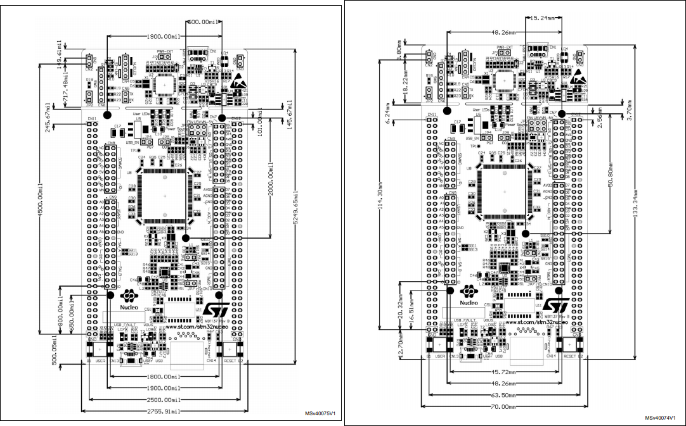
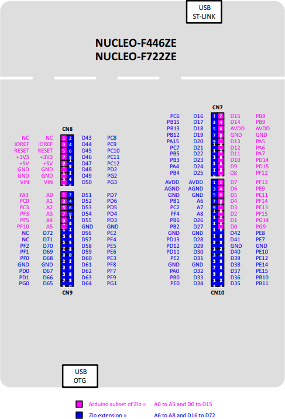
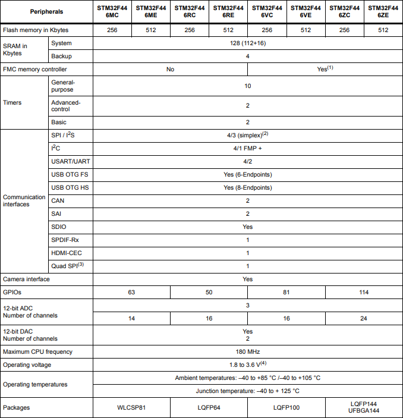

Main sPrinter Control Software
This document provides information about the control software of the sPrinter rover, developed by students of the Faculty of Electrical Engineering and Information Technology STU in Bratislava.
While it was previously developed in ac6 System Workbench, we decided to transfer
to regain control over our toolchain and transfer to non-managed environment.
We currently use cmake and compile with arm-none-eabi-gcc with newlib and c++17.
We generate the initialization via STM CubeMX, and use CLion as our IDE.
Debugging is done via the open source Open OCD debugger. It's pretty cool.
Fuck Eclipse dude, seriously.
General Information
This chapter contains general information of the project.
MCU And Board
The board used is Nucleo F446ZE, with STM32F446ZET MCU.
Board Mechanical Drawing in mil

Board Pin Mapping

MCU Features and Peripherals

Pin Mapping
This is the current pin mapping of the main sPrinter MCU.
| Pin | Name | Mode | Peripheral | Function |
|---|---|---|---|---|
| PA0 | SRV1_POS | PWM2 | TIM2_CH1 | Servo 1 position |
| PA1 | SRV2_POS | PWM2 | TIM2_CH1 | Servo 2 position |
| PA8 | USB_SOF | SOF | USB_OTG_FS | USB start of signal |
| PA9 | LOG_TX | TX | USART1 | Log serial transmit |
| PA10 | LOG_RX | RX | USART1 | Log serial receive |
| PA11 | USB_DM | DM | USB_OTG_FS | USB data minus |
| PA12 | USB_DP | DP | USB_OTG_FS | USB data plus |
| PA13 | TMS | SWDIO | SYS_JTMS | JTag test mode select |
| PA14 | TCK | SWCLK | SYS_JTCK | JTag clock |
| PB0 | LED_GREEN | OUT_PP | GPIO | Green LED |
| PB7 | LED_BLUE | OUT_PP | GPIO | Blue LED |
| PB10 | STEP1_DIR | OUT_PP | GPIO | Stepper 1 direction |
| PB11 | STEP2_DIR | OUT_PP | GPIO | Stepper 2 direction |
| PB14 | LED_RED | OUT_PP | GPIO | Red LED |
| PC0 | SUN_ADC1 | IN10 | ADC1 | Suntracker analog in |
| PC1 | SUN_ADC2 | IN11 | ADC1 | Suntracker analog in |
| PC2 | SUN_ADC3 | IN12 | ADC1 | Suntracker analog in |
| PC3 | SUN_ADC4 | IN13 | ADC1 | Suntracker analog in |
| PC4 | SUN_ADC5 | IN14 | ADC1 | Suntracker analog in |
| PC6 | ENG4_SPD | PWM2 | TIM8_CH1 | Engine 4 speed |
| PC7 | ENG3_SPD | PWM2 | TIM8_CH2 | Engine 3 speed |
| PC8 | ENG2_SPD | PWM2 | TIM8_CH3 | Engine 2 speed |
| PC9 | ENG1_SPD | PWM2 | TIM8_CH4 | Engine 1 speed |
| PC13 | USER_BTN | EXTI10_RT | GPIO | User button interrupt |
| PC14 | OSC32_IN | OSC32_IN | RCC | Oscillator input |
| PC15 | OSC32_OUT | OSC32_OUT | RCC | Oscillator output |
| PD0 | STEP1_EN | OUT_PP | GPIO | Stepper 1 enable |
| PD1 | STEP2_EN | OUT_PP | GPIO | Stepper 2 enable |
| PD5 | RF_TX | TX | USART2 | RF module transmit |
| PD6 | RF_RX | RX | USART2 | RF module receive |
| PD8 | STLK_TX | TX | USART3 | STLink transmit |
| PD9 | STLK_RX | RX | USART3 | STLink receive |
| PD12 | ENG5_SPD | PWM2 | TIM4_CH1 | Engine 5 speed |
| PD13 | ENG6_SPD | PWM2 | TIM4_CH2 | Engine 6 speed |
| PD14 | ENG7_SPD | PWM2 | TIM4_CH3 | Engine 7 speed |
| PE2 | ENC3_EI | EXTI2_RFT | GPIO | Encoder 3 interrupt |
| PE3 | ENC4_EI | EXTI3_RFT | GPIO | Encoder 4 interrupt |
| PE4 | ENC5_EI | EXTI4_RFT | GPIO | Encoder 5 interrupt |
| PE5 | ENC6_EI | EXTI5_RFT | GPIO | Encoder 6 interrupt |
| PE7 | ENG1_DIR | OUT_PP | GPIO | Engine 1 direction |
| PE8 | ENG2_DIR | OUT_PP | GPIO | Engine 2 direction |
| PE9 | ENG3_DIR | OUT_PP | GPIO | Engine 3 direction |
| PE10 | ENG4_DIR | OUT_PP | GPIO | Engine 4 direction |
| PE11 | ENG5_DIR | OUT_PP | GPIO | Engine 5 direction |
| PE12 | ENG6_DIR | OUT_PP | GPIO | Engine 6 direction |
| PE14 | ENG7_DIR | OUT_PP | GPIO | Engine 7 direction |
| PG0 | ENC1_EI | EXTI0_RFT | GPIO | Encoder 1 interrupt |
| PG1 | ENC2_EI | EXTI1_RFT | GPIO | Encoder 2 interrupt |
| PG2 | STEP1_CTL | OUT_PP | GPIO | Stepper 1 control |
| PG3 | STEP2_CTL | OUT_PP | GPIO | Stepper 2 control |
| PG6 | USB_PWR | OUT_PP | GPIO | USB power switch on |
| PG7 | USB_OC | IN | GPIO | USB over current |
| PH0 | MCO | OSC_IN | RCC | Oscillator input |
| PH1 | OSC_OUT | OSC_OUT | RCC | Oscillator output |
Core Library
The core library is the fundamental library containing basis of the system, the scheduler, time manipulation and logging.
Core Library - Logging Functionality
Headers
-
core/log.hContains thetemplate<typename ... Args> void log(Args ... args)function, which allows logging any implemented type into the default log USART.
-
core/fatal.hContains the unrecoverabletemplate<typename ... Args> void fatal(Args ... args)function, which freezes the system along with reporting.
Extending the Logger
If you want to be able to log a special non-trivial type T,
you need to provide a void logImpl::log(T) function for it.
If you want the logging system to know your type, you must include your
logImplfunction declaration before you include the log header.
Example Usage
Log Example
#include <core/log.h>
void printFoo(uint32_t x, const char *y)
{
log("The x is: ", x, ", and the y is: \"", y, "\"\n");
}
Fatal Example
#include <core/fatal.h>
void printBar(uint32_t *x)
{
if(!x)
fatal("Oh no, nullptr dereference in printBar! - x = ", uintptr_t(x), "\n");
log("The *x is: ", *x, "\n");
}
Extending the Logger Example
// Foo.h
struct Foo {
uint32_t x;
uint16_t ys[8];
};
namespace logImpl { void log(const Foo &foo); }
// Foo.cpp
#include "Foo.h"
#include <core/log.h>
namespace logImpl {
void log(const Foo &foo)
{
log("Foo { x: ", foo.x, ", ys: [ ");
for(const auto &y: foo.ys)
log(y, " ");
log("] }");
}
}